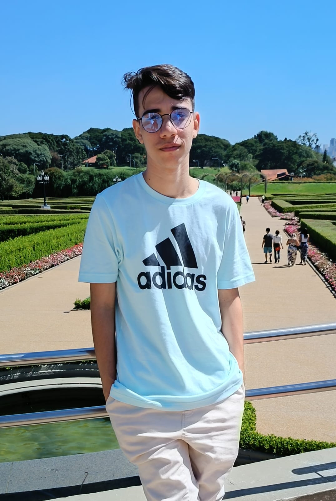

 Desenvolvedor
Desenvolvedor
Front-end
& Designer
Esperando uma oportunidade em - Rio de Janeiro!
Desenvolvedor Esperando uma oportunidade em - Rio de Janeiro!
Focado na parte de front-end, desenvolvo projetos pessoas focados em HTML, CSS usando SCSS e JavaScript, prototipando no Figma para melhor experiência do usuário.
Projeto Desenvolvido para o trabalho da matéria de desenvolvimento WEB no primeiro semestre da faculdade.
Landing Page desenvolvida a partir do curso da Origamid de HTML e CSS.
Pequeno projeto desenvolvido para mostrar as plantinhas da minha irmã.
Formação em Análise e desenvolvimento de Sistemas pelo colégio federal Pedro II. Atualmente cursando Sistemas de Informação pela faculdade Veiga de Almeida e realizando cursos através da plataforma da Origamid.
Técnico
Colégio Pedro II
Cursando
UVA - Veiga de Almeida
Cursando
Origamid
Cursos Doméstika
Hobbie
Intermediário